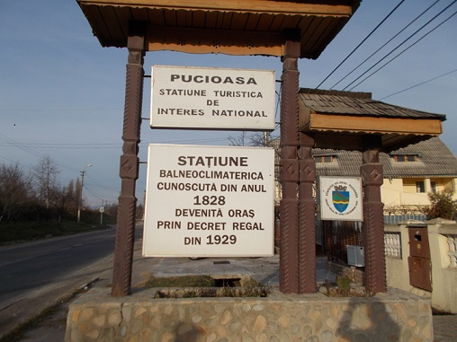

Obiective Culturale Dâmbovița
Pucioasa
Pucioasa este un oraș în județul Dâmbovița, Muntenia, România, format din localitățile componente Bela, Diaconești, Glodeni, Malurile, Miculești, Pucioasa (reședința) și Pucioasa-Sat. În trecut, localitatea purta numele Podurile, însă o dată cu dezvoltarea băilor și-a însușit numele Pucioasa. Are o populație de 14.254 locuitori (2011), iar economia orașului se bazează în proporție covârșitoare pe turism, dar și pe comerț, transport și exploatarea ghipsului din cariera de ghips. Pucioasa este așezată pe cursul mijlociul al văii Ialomiței, la 20 km de Târgoviște, în zona dealurilor subcarpatice, a căror înălțime depășesc cu puțin 600 metri și sunt situate la 390 metri deasupra nivelului mării. Orașul este situat în zona colinar centrală a județului Dâmbovița, la 81 de km față de limita sudică și la 42 de km față de limita nordică. Se află la o distanță aproximativ egală față de București și de Brașov, la 100 de km de fiecare. Se întinde pe o distanță de 8,750 km de-a lungul Văii Ialomiței între Miculești și Zărăfoaia și pe o lățime de 7,375 km între Pucioasa-Sat și Maluri, având o suprafață totală de 4239 hectare, dintre care teren intravilan 714,4 hectare și 3545 hectare extravilan.
Orașe apropiate
Istoric
Localitatea s-a format în jurul anului 1760 prin contopirea așezărilor Șerbănești (atestată documentar la 26 septembrie 1538) cu Podurile de Jos și Podurile de Sus (menționate documentar în 1461) și cu satul Zărăfoaia. Prima atestare documentară a orașului datează încă din 20 septembrie 1649, apărând ca "Piatra Pucioasa". Mai apare în documente în 1759 și în 1790 (o hartă austriacă).
În 1791 localitatea figura pe o hartă austriacă, iar în 1835 pe una rusească.[necesită citare] După anul 1828, când izvoarele sulfuroase au fost descoperite de un medic militar rus ajuns aici în timpul ocupației țariste a Țării Românești,[5] Pucioasa s-a dezvoltat ca stațiune balneoclimaterică, luând denumirea de Pucioasa, datorită apelor minerale sulfuroase concentrate de aici, numite popular pucioasă. Procesul de amenajare a băilor de la Pucioasa a continuat în 1873 cu participarea la Expoziția de la Viena, prilej cu care apele au fost analizate de specialiști austrieci; începând cu 1875, Consiliul Județean a cumpărat un teren pentru amenajarea unor spații publice și patru ani mai târziu l-a însărcinat pe arhitectul Kertsch din Galați să construiască stabilimentul. Înainte ca acesta să fie construit, turiștii închiriau locuințe de la localnici și li se aducea apă pentru baie în butoaie la locuințele închiriate.[5]La sfârșitul secolului al XIX-lea, Pucioasa era o stațiune balneară parte a satului Șerbănești, aflat în comuna Șerbănești-Podurile, reședința plaiului Ialomița-Dâmbovița, județul Dâmbovița.[5] Comuna Șerbănești-Podurile fusese recent formată, în 1886, prin unirea comunelor Șerbănești și Podurile; comuna Șerbănești avea în compunere satele Șerbănești, Miculești și Diconești, cu 2000 de locuitori. Aici funcționau două biserici și o școală mixtă.[6] Comuna Podurile a venit cu satele Podurile de Sus, Podurile de Jos, Malurile și Pucioasa, cu 2300 de locuitori. Ea avea două biserici, șase mori de apă, 3 școli mixte și instituțiile de administrare a plaiului.[7] Pe teritoriul actual al orașului mai funcționa pe atunci în același plai și comuna Bela, cu satele Bela, Nistorești și Broștenii Noi având în total 1100 de locuitori. Și aici existau o moară de apă, o biserică și o școală.[8] La începutul secolului al XIX-lea, datorită finalizării băilor de la Pucioasa, comuna Șerbănești-Podurile a luat numele de Pucioasa, iar comuna Bela a fost desființată și inclusă în aceasta. Astfel, Anuarul Socec din 1925 consemnează comuna Pucioasa cu 5201 locuitori, reședință a plășii Pucioasa a județului Dâmbovița și având în compunere satele: Bela, Diaconești, Glodeni, Malurile, Podurile de Jos, Podurile de Sus (reședința), Pucioasa și Șerbănești.[9] În 1938, Enciclopedia României consemnează Pucioasa drept comună urbană (oraș), cu 5779 de locuitori.[10] În 1950, orașul a devenit reședința raionului Pucioasa din regiunea Prahova, dar în 1962 a pierdut acest statut, raionul fiind inclus în întregime în raionul Târgoviște al regiunii Ploiești. În 1968, satele Podurile de Jos, Scarlenta și Șerbănești au fost desființate și incluse în orașul propriu-zis; tot atunci, regiunile au fost desființate iar Pucioasa a redevenit oraș al județului Dâmbovița
more...